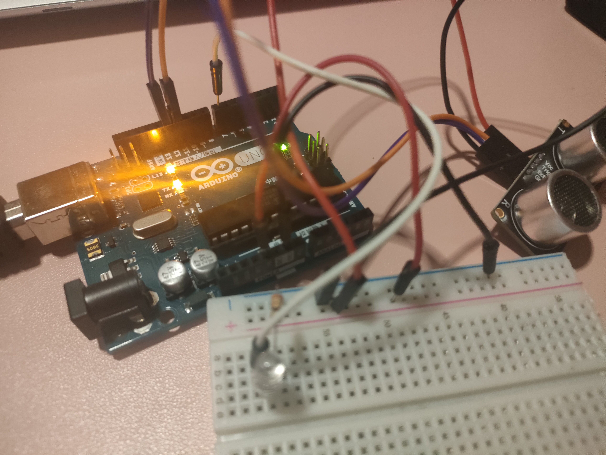
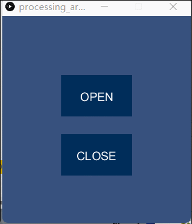
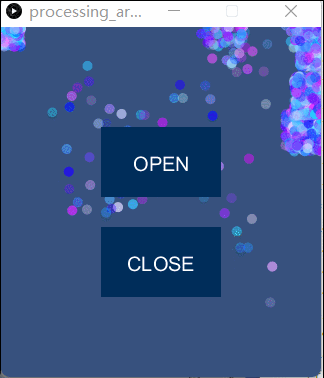

Undefined
Home
Project
Team
Blog
Blog 1
Home
Project
Processing GUI

简介
使用Arduino和processing相互通信，processing控制led灯珠的打开和关闭，超声波传感器的数据传给processing用于生成背景粒子
所需硬件
Arduino开发板
X 1
电阻
X 1
连接线
X n
面包板
X 1
LED
X 1
超声波传感器
X 1
具体实现
arduino代码
int trigPin = 11; //Trig int echoPin = 12; //Echo long duration, cm, inches; void setup() { pinMode(trigPin, OUTPUT); pinMode(echoPin, INPUT); pinMode(7, OUTPUT); Serial.begin(9600); //start serial communication @9600 bps } void loop(){ digitalWrite(trigPin, LOW); delayMicroseconds(5); digitalWrite(trigPin, HIGH); delayMicroseconds(10); digitalWrite(trigPin, LOW); duration = pulseIn(echoPin, HIGH); cm = (duration/2) / 29.1; inches = (duration/2) / 74; Serial.print("cm： "); Serial.println(cm); Serial.write(cm); delay(1000); if(Serial.available()){ //id data is available to read char val = Serial.read(); if(val == 'r'){ //if r received digitalWrite(7, HIGH); //turn on } if(val == 'b'){ //if b received digitalWrite(7, LOW); //turn on } if(val == 'y'){ //if y received digitalWrite(5, HIGH); //turn on } if(val == 'f'){ //if f received digitalWrite(5, LOW); //turn off } } }
processing代码
import controlP5.*; //import ControlP5 library import processing.serial.*; Serial port; ControlP5 cp5; //create ControlP5 object PFont font; void setup(){ //same as arduino program size(320, 350); //window size, (width, height) noStroke(); printArray(Serial.list()); //prints all available serial ports background(55, 81, 126); // background color of window (r, g, b) or (0 to 255) fill(255, 255, 255); //text color (r, g, b) port = new Serial(this, "COM5", 9600); //i have connected arduino to com3, it would be different in linux and mac os cp5 = new ControlP5(this); font = createFont("calibri light bold", 20); // custom fonts for buttons and title cp5.addButton("open") .setPosition(100, 100) //x and y coordinates of upper left corner of button .setSize(120, 70) //(width, height) .setFont(font) ; cp5.addButton("close") .setPosition(100, 200) //x and y coordinates of upper left corner of button .setSize(120, 70) //(width, height) .setFont(font) ; } void draw(){ //same as loop in arduino int input = 50; fill(random(255), random(255), 255,random(50,200)); while(port.available()>0) { input = port.read(); //read information from Arduino println(input); ellipse(input*random(10),random(input)+input, 20, 20); } //ellipse(random(mouseX-20,mouseX+20), random(mouseY-20,mouseY+20),10, 10); } void open(){ port.write('r'); } void close(){ port.write('b'); }
演示视频
两种粒子背景效果对比
 